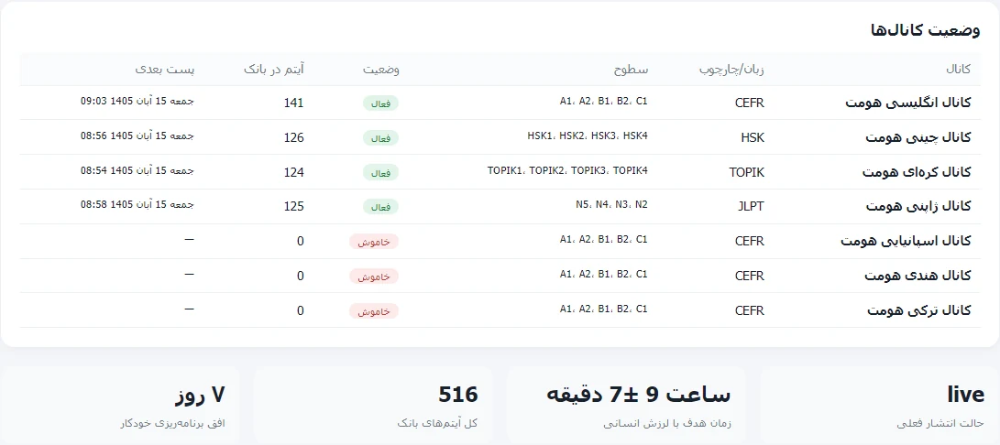

← Back to work
CONTENT OPERATIONS / Homat Academy
Four channels. One publishing rhythm.
A content and engineering workflow for language-learning communities.

PROJECT NOTESHomat AcademyDiscuss a project ↗
01
The challenge
Four educational channels needed regular content without losing control of timing, repeats or editorial consistency.
02
The solution
Led a PHP/Python publishing workflow with an admin panel, queue, and multilingual content preparation. Telegram delivery runs through a separate Termux-based sender where access from Iranian hosting is restricted.
03
Project record
The project documentation records 475 prepared content items and 29 automated checks, with fixes for scheduling and duplicate-publication bugs. These figures describe the documented project scope.

SOURCE LINKS